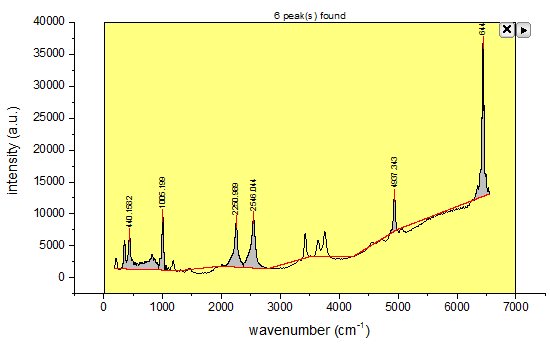

Minitool Peakanalyse
Quick-Peak-Gadget
Zusammenfassung
Das Minitool Impulsanalyse kann verwendet werden, um Peaks auszuwählen, Basislinien zu subtrahieren, Peaks in einer grafischen Datenauswahl (ROI) zu integrieren und/oder anzupassen. Es ist auch möglich, dieses Hilfsmittel in Kombination mit dem Peakanalysator zu verwenden. Bitte lesen Sie weitere Einzelheiten in diesem Tutorial.
Origin-Version mind. erforderlich: Origin 2015 SR1
Was Sie lernen werden
Dieses Tutorial zeigt Ihnen, wie Sie:
- die Basislinie für ein Spektrum mit dem Minitool Peakanalyse suchen und subtrahieren.
- mit dem Minitool Impulsanalyse Peaks in dem Diagramm suchen.
- Standardeinstellungen benutzerdefiniert anpassen.
Schritte
- Öffnen Sie eine neue Arbeitsmappe, indem Sie auf die Schaltfläche Neue Arbeitsmappe
 klicken. Wählen Sie Hilfe: Ordner öffnen: Sample-Ordner ... im Menü, um den Ordner "Samples" zu öffnen. Öffnen Sie in diesem Ordner den Unterordner Spectroscopy. Dort befindet sich die Datei Zircon.dat. Ziehen Sie diese Datei per Drag&Drop in das leere Arbeitsblatt, um sie zu importieren.
klicken. Wählen Sie Hilfe: Ordner öffnen: Sample-Ordner ... im Menü, um den Ordner "Samples" zu öffnen. Öffnen Sie in diesem Ordner den Unterordner Spectroscopy. Dort befindet sich die Datei Zircon.dat. Ziehen Sie diese Datei per Drag&Drop in das leere Arbeitsblatt, um sie zu importieren.
- Markieren Sie Spalte Col(B) und zeichnen Sie ein Liniendiagramm mit der Schaltfläche Liniendiagramm
 auf der Symbolleiste 2D-Grafiken.
auf der Symbolleiste 2D-Grafiken.
- Wählen Sie Minitools: Peakanalyse im Hauptmenü, um den Dialog Peakanalyse: addtool_quickpeaks zu öffnen.
- Wechseln Sie zur Registerkarte Basislinie, setzen Sie den Modalwert auf 2. Ableitung und den Bereich auf Bereich des gesamten Diagramms. Klicken Sie auf OK, um die Einstellungen anzuwenden.
- Die Peaks innerhalb des gelben Rechtecks der grafischen Datenauswahl (ROI) werden gesucht und gekennzeichnet. Verändern Sie die Größe des ROI-Felds so, dass es den X-Bereich [0,7000], wie im Graph unten gezeigt, abdeckt. Die Suche nach Basislinie und Peaks benötigt noch Verfeinerung.

- Klicken Sie auf die dreieckige Schaltfläche
 und wählen Sie Einstellungen im Ausklappmenü. Hier können die Glättungsmethode auf der Registerkarte Basislinie anpassen, so dass sie dem Graph folgt:
und wählen Sie Einstellungen im Ausklappmenü. Hier können die Glättungsmethode auf der Registerkarte Basislinie anpassen, so dass sie dem Graph folgt:
Klicken Sie auf Anwenden und passen Sie die Werte auf der Registerkarte Peak suchen an:
- Klicken Sie auf OK, um die Einstellungen anzuwenden und den Dialog zu schlließen. Die Suche nach Basislinie und Peaks ist besser als vorher, was auf die optimierten Werte für Schwellenwert und Maximale Ankerpunkte für die Basislinie sowie Schwellenwerthöhe (%) für Peak suchen zurückzuführen sein kann:
- Klicken Sie auf die dreieckige Schaltfläche und wählen Sie Neue Ausgabe, um die Ergebnisse der Peaksuche in einem Berichtsblatt auszugeben.
Klicken Sie auf die dreieckige Schaltfläche und wählen Sie Zum Berichtsblatt gehen, um die Ausgabe der Eigenschaften anzuzeigen:

- Aktivieren Sie das Diagrammfenster, auf das das Minitool angewendet wurde, klicken Sie auf die dreieckige Schaltfläche , wählen Sie Basislinie subtrahieren und klicken Sie auf OK im Popup-Fenster. Die Basislinie wurde aus den Daten subtrahiert.
- Hinweis: Prüfen Sie nach dem Subtrahieren die Basislinie. Falls nichts passiert ist, liegt das daran, dass die Daten über den Konnektor importiert wurden. In diesem Fall müssen Sie auf das grüne Symbol
 in der oberen linken Ecke des Arbeitsblatts klicken und dann Importierte Daten entsperren oder Datenkonnektor entfernen... wählen. Subtrahieren Sie die Basislinie dann erneut.
in der oberen linken Ecke des Arbeitsblatts klicken und dann Importierte Daten entsperren oder Datenkonnektor entfernen... wählen. Subtrahieren Sie die Basislinie dann erneut.
- Klicken Sie auf die Schaltfläche X in der oberen rechten Ecke des Minitools. Das fertiggestellte Diagramm sieht folgendermaßen aus:
Hinweis: Um die Anpassungsoptionen zu erweitern, können Sie das Minitool Peakanalyse mit dem Hilfsmittel Peaks analysieren kombinieren.